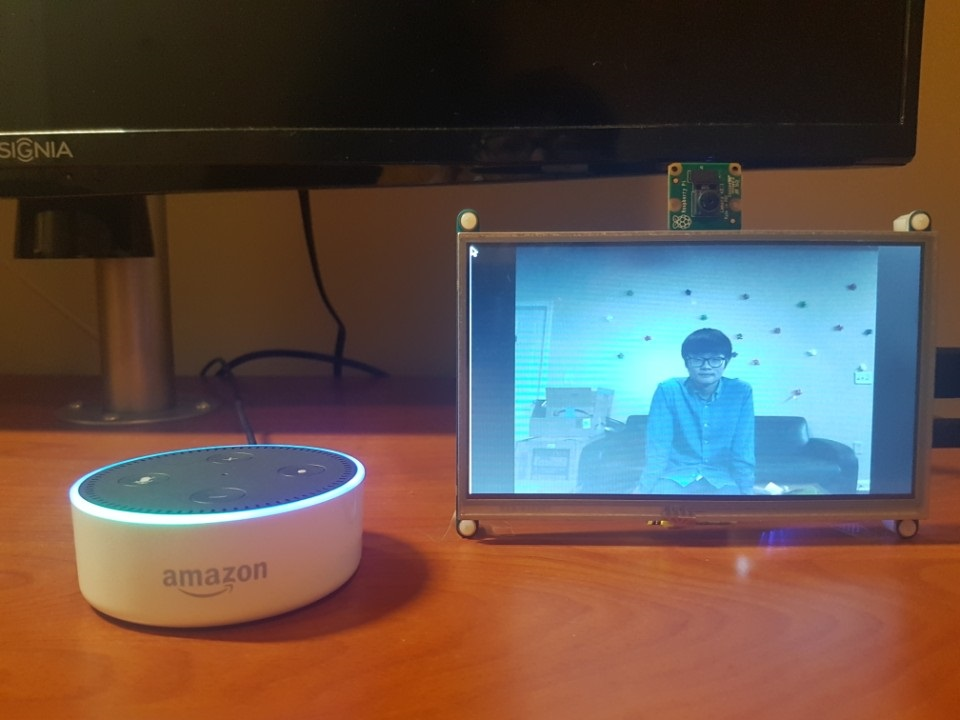

Alan Wootae Song
Smart Picture Frame
View source code on GitHubKey Words
Raspberry Pi 3, Echo Dot, Alexa Skills, AWS Lambda, Node.js, AWS IoT, Node-RED, C++, SDL, Multithreaded Programming, JavaScript, JSON, MQTT, Makefile, C, C++, Python, Linux, JavaScript
What is Smart Picture Frame?
Smart picture frame is an IoT picture frame that you can speak to. A user can command the device to take a picture and look through the pictures taken using his or her voice. Unlike a traditional picture frame, a user does not need to take a picture and print it out to display, which takes a long time. With this device, a user can take a picture at any time and display it instantly.
Demonstration
Demonstration of Smart Picture Frame
Overall Design
Network Design

Camera and Display Design

Language/Software used
- C
- C++
- Python
- SDL2
- Linux
- Makefile
- JavaScript
- Multithreaded Programming
- Node-RED
- Node.js
- AWS Lambda
- AWS IoT
- Alexa Skills
- JSON
- MQTT
Hardware used
- Raspberry Pi 3
- Raspberry Pi camera module v2
- Adafruit HDMI mini monitor
- Amazon Echo Dot